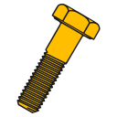

BOLTSFC Workbench/pl
Ta dokumentacja nie jest ukończona. Prosimy o pomoc w tworzeniu dokumentacji.
Strona Model polecenia GUI wyjaśnia jak powinny być dokumentowane polecenia. Przejrzyj stronę Category:UnfinishedDocu, aby zobaczyć więcej niekompletnych stron, takich jak ta. Zobacz stronę Category:Command Reference aby poznać wszystkie komendy.
Zobacz stronę wytycznych Wiki dla FreeCAD aby dowiedzieć się, jak edytować strony Wiki, i przejdź do strony Pomóż w rozwoju FreeCAD, aby dowiedzieć się o innych sposobach, w jakie możesz wnieść swój wkład.
{kind=link}

Wprowadzenie
BOLTS to otwarta biblioteka specyfikacji technicznych.
Bibliografia
- Autor: jreinhardt Johannes Reinhardt
- Opiekun: @bernd
- Strona główna: BOLTS
- Kod źródłowy w serwisie GitHub: https://github.com/boltsparts/BOLTSFC
Przybory
Szczegółowy opis tutaj
Wybór części standardowych:
{kind=link}
Instalacja
Instalacja automatyczna
To środowisko pracy można zainstalować za pomocą Menadżera dodatków.
Z repozytorium GitHub
Opis instalacji znajduje się w serwisie GitHub
Wymagania wstępne
Aby korzystać z BOLTS dla FreeCAD wymagane są:
- FreeCAD (https://freecad.org)
- python 3.x
- pyyaml (https://pyyaml.org/)
- importlib (https://pypi.python.org/pypi/importlib/1.0.2) (tylko dla python 2.6).
Instrukcja instalacji dla systemu Linux (z GitHub)
Instrukcja instalacji dla systemu Windows (z GitHub)
Instrukcja instalacji dla systemu MacOS (z GitHub)
Linki do środowiska pracy BOLTS
- Wiki środowiska pracy: https://web.archive.org/web/20210513004234/https://www.bolts-library.org/en/docs/0.3/index.html
- Wiki FreeCAD:
- Forum FreeCAD: 4549
- Poradniki: https://web.archive.org/web/20171004210027/http://www.bolts-library.org/en/docs/0.3/freecad/usage.html
- Filmy:
- Pliki:
- Lista części, autor i organy normalizacyjne: Lista części
- Zgłaszanie błędów: Prosimy o zgłaszanie błędów na stronie https://github.com/jreinhardt/BOLTS/issues
Powiązane
- Jak zacząć
- Instalacja: Pobieranie programu, Windows, Linux, Mac, Dodatkowych komponentów, Docker, AppImage, Ubuntu Snap
- Podstawy: Informacje na temat FreeCAD, Interfejs użytkownika, Profil nawigacji myszką, Metody wyboru, Nazwa obiektu, Edytor ustawień, Środowiska pracy, Struktura dokumentu, Właściwości, Pomóż w rozwoju FreeCAD, Dotacje
- Pomoc: Poradniki, Wideo poradniki
- Środowiska pracy: Strona Startowa, Złożenie, BIM, CAM, Rysunek Roboczy, MES, Inspekcja, Siatka, OpenSCAD, Część, Projekt Części, Punkty, Inżynieria Wsteczna, Robot, Szkicownik, Arkusz Kalkulacyjny, Powierzchnia 3D, Rysunek Techniczny, Test Framework